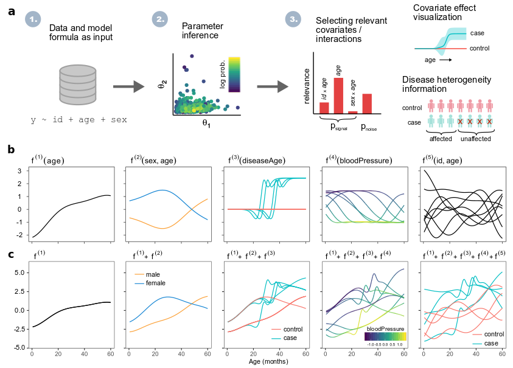

Tutorials
Info
lgpr is an R package for Longitudinal Gaussian Process Regression. It includes
- Bayesian nonparametric modeling of longitudinal data using additive Gaussian process regression
- Covariate selection (categorical, continuous, interaction) and interpretable visualization of covariate effects
- Disease effect modeling either homogeneously or heterogeneously across diagnosed patients
- Modeling uncertainty in the disease effect time
- Various observation models: Gaussian, Poisson Negative Binomial, Bernoulli and binomial
- Efficient posterior inference using Stan
Static release v0.33.0:

Installation
Requirements
- Linux is the preferred operating system. However, the package works also on Mac and Windows. We dont have pre-compiled binaries distributed yet, so the only way to install lgpr is from source. To compile the Stan code included in the package on Windows or Mac, you need to have your toolchain setup properly.
- R version 3.4 or later is required
Installation steps
- Install the devtools package if you don't have it, for example by using
install.packages('devtools') - Install the dependency rstan using these instructions
- Remove possible incompatible version of rstantools using
remove.packages('rstantools')and install version 2.0.0 usingdevtools::install_version("rstantools", version = "2.0.0", repos = "http://cran.us.r-project.org") - Install lgpr using
devtools::install_github('jtimonen/lgpr', dependencies = TRUE)
Note: The exact version 2.0.0 of rstantools is recommended due to problems with some recently updated versions of StanHeaders or rstantools. The problem is being inverstigated. See this thread for more info.
Tutorials
These tutorials are a good resource to get started with lgpr.
- Basic tutorial
- Longitudinal proteomics data analysis
- Learning uncertain disease effect times
- Heterogeneous disease modeling
- Using a binomial observation model
- Using a negative binomial observation model
These notebooks demostrate longitudinal GP modeling of classic data sets that are commonly used to demonstrate linear mixed models.